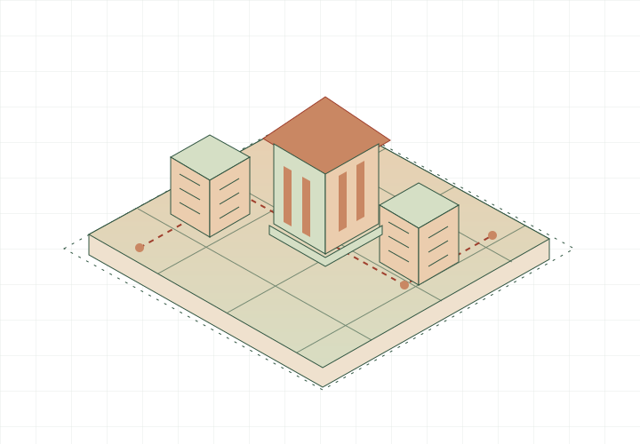

CW / CIVIC SYSTEMS

CitizenOfficerAdministrator
Submit Process Update status
WEB APPLICATION OCT — DEC 2025
Civic Welfare
Application.
Connecting citizens and civic teams through a structured complaint process.
MY ROLE Backend Developer
Inside the project
The problem
Organizing civic complaints while giving citizens, officers, and administrators access appropriate to their roles.
My contribution
Implemented backend complaint processing, role-based access control, and status update logic for a system with structured database storage.
Key features
- Separate login access for citizens, officers, and administrators.
- Role-based permissions and complaint status updates.
- Structured storage of civic welfare data.
Technology documentation
The resume documents database storage and backend functionality, but does not name this project’s technology stack.